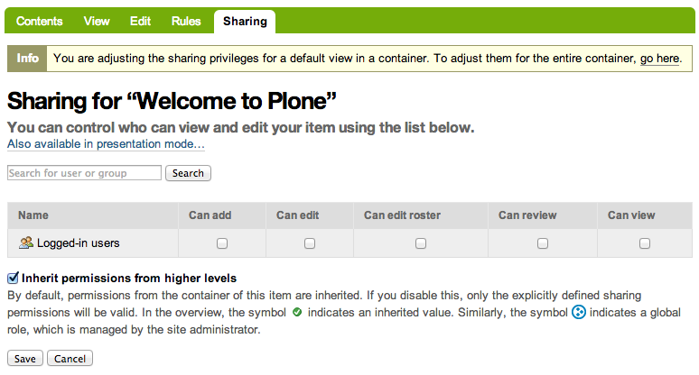

Beyond the Sharing Tab
Modeling Teams of People in Plone
David Glick
Plone Conference 2013
- Plone's a jack of all trades. Good at lots of kinds of sites.
- Tagline: content, collaboration, community
Block quote ends without a blank line; unexpected unindent.
- another way of categorizing web projects, by audience
- public website -> anonymous users
- intranet -> priviled users / staff
- member services -> providing tools for identified, non-privileged users
- Plone can build a site that does all of these
Authentication:
Who are the users?
- external vs internal member db
External member database
- LDAP
plone.app.ldap
- SQL
pas.plugins.sqlalchemy
- Google, Facebook, Twitter, etc.
plonesocial.auth.rpx
- from web server
Products.WebServerAuth
- Pros:
- Integration with existing user db.
- Store properties externally or in Plone
- Cons:
- Takes some care to avoid performance problems
- Missing the full benefits of in-Plone content: forms, workflow, searching
External PAS Plugins
Common culprits for performance problems
- bad enumerateUsers implementation
- need to turn on "many users" / "many groups"
- If the backend doesn't support searching by email or fullname, make sure enumerateUsers will ignore queries using those fields
- Many users & groups settings prevent the users control panel from trying to list users before you search.
In-Plone member database
- Standard Plone users
- dexterity.membrane
standard:
- pretty lightweight, BTree for auth, another for properties
- developer can customize, but is hard to figure out
dexterity.membrane
- lets a Dexterity content type act as a member as long as it has a few key fields
Pros:
- everything in one place
- all the features of Plone content
Cons:
- lack of integration
- d.m can bloat your site if you have a lot of users
The membrane catalog
- There is a problem with dexterity.membrane that can be solved.
- Second catalog duplicates indexes, slows edits.
- I'd really like to see something that provided a similar interface to membrane, but used the main catalog.
Member directory
Authorization:
What can the users do?
The Member role
By default:
- Granted to all users
- Doesn't grant many permissions
- As a result, it's not terribly useful out of the box.
The intranet workflow
- Like standard workflow, but allows publishing internally (to users with the Member role) or externally.
- May want to change initial state to 'private'.
Member levels
i.e. trial, free member, premium member, lifetime member
- Protect UI elements with permissions
- Assign permissions to roles (i.e. Anonymous, Member, PremiumMember)
- Grant those roles to the right users
- This approach makes it really easy to change who has access when the client asks for it.
- Will cover how to grant the roles in a minute...
UI for member levels
- Select your member level
- Pay for membership
- Renewal
- Upgrade/downgrade level
- Using multiple member levels implies a bunch of UI that Plone doesn't have out of the box.
- Also custom business logic (i.e. what happens when downgrading)

Member states
- Pending
- Active
- Grace Period
- Lapsed
- Can be modeled with workflow
- Then need a cron job to update state each day
- Or can grant automatically...
Granting site-wide roles
- Manually with the Users/Groups control panel
- Automatically with membrane adapters (dexterity.membrane)
- Automatically with custom PAS plugin
What about "placeful" access control?
Use cases:
- Private area for a committee
- Private area for participants in a course or activity
- Paid download of content
- Has been solved in many different ways over the years. Teamspace, borg.project, etc.
The classic approach: Sharing with groups
- Plone lets you put users in groups.
- The sharing tab lets you grant a role to a group in a particular location.
So the recipe is:
- Leave something private (i.e. minimum access)
- Grant the Reader role ("Can view") to a group of people
- Edit the group via the Users/Groups control panel
Cons:
- Doesn't provide a way to delegate control over the group (because users must be admins to access the Groups control panel)
- Requires setting things correctly in several different places
- Too easy to accidentally publish
collective.local.*
- collective.local.adduser and collective.local.addgroup
- They solve the delegation problem by adding to the sharing tab UI
Still some things missing:
- Storing metadata about someone's association with a content item.
- Looking up which content items a person is associated with.
collective.workspace

- I've been developing a new add-on to help with this use case: collective.workspace
- Behavior that can enable a Roster tab for any Dexterity content type
collective.workspace

- Can edit each roster membership.
collective.workspace
- Automatically creates a member and admin group for each roster-enabled item.
- Shows up on sharing tab, but is not editable. Doesn't show up in site control panel.
- Other features:
- Can be extended with more groups, custom fields
- Indexes roster members so you can look up where a user is a member.
collective.workspace TODO
- ALPHA alert!
- Easier configuration
- More features?
- Feedback welcome
- Needs tests, docs, release
- Configuring is currently a developer task, not a control panel
- Possible features: invitations, workflow policy
What if the user is logged in but doesn't have access?
- Standard Plone: "Insufficient privileges"
- Upsell: Show the user info about what they were trying to access, why they can't, and what they have to do to get there.
- Registration upsell: Make registration more obvious on the login form!
- Unfortunately, these are a bit tricky to implement currently.
Enhanced user profile
- Show on login
- Multiple pages?
- Summarize activity
- Contact info
- Manage subscriptions
- Privacy settings
Special notices
- Renewal alerts
- Promos
Hiding the edit bar
- Sometimes it's necessary to make the Plone UI less confusing for users who haven't been trained in Plone.
- Can customize the actions viewlet and add a permission check.
Caching
- Serve authenticated traffic on a different domain, if possible.
- Consider varying on role rather than user
- Describe split-view problem
- Serve traffic on a different domain, if possible
- Changing to vary by role:
- remove user-specific content
- or load separately (js or esi)
Where is the integrated product?
- There's a gap in the Plone add-on ecosystem; we need one that handles these use cases.
- Good UI for both users and admins.
Questions?
- IRC
davisagli